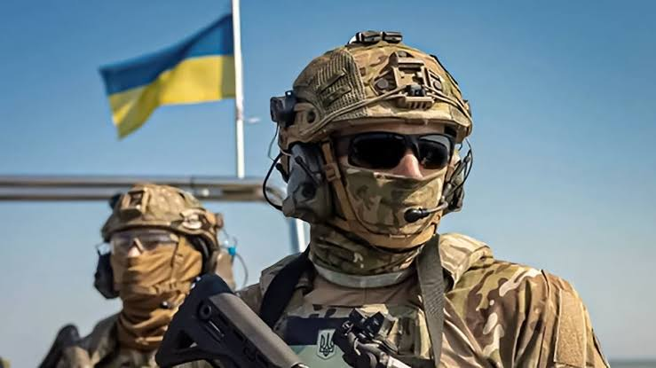
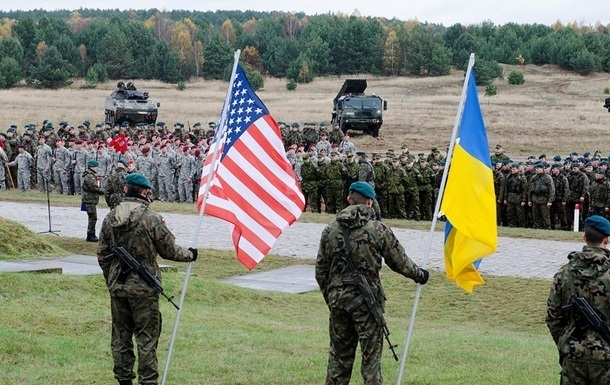

Territorial foreign defense
Private Military Contractor Companies
Today you have the opportunity to gain knowledge and hands on, actual combat experience, in the most dynamic war the world has ever seen. This war is not only a war of men and women, but it is also a war of technology and new tactical diverse machinery never used before. Here in Ukraine this is a war of past, present and the future. As it continues to evolve technological warfare advances, along with the basic tactical methods of reconnaissance, trench warfare, drone warfare, everything you may have already learned or used in past military experience has changed. Some basic military skills still are used, but here some skills will prove to be obsolete. If you are looking to be part of something that will change the world, then consider filling out a form for Joining our Battalion. Possible candidates with past military experience are greatly needed. But also, civilians with skillsets like doctors, nurses, paramedics, mechanics, police officers, private security, drivers, fire fighters, engineers, are also welcome to apply. Everyone must understand, primarily you will be trained as and serve as an infantry soldier. You will be an infantry soldier first and foremost, and if the command staff sees fit to assign you as anything else in your field of expertise, then they will make that determination. But again, you will be an infantry soldier and expected to go to combat. (For companies and individuals in the private military contractor’s field. You have the opportunity to be trained by the armed forces of Ukraine, and go to one of our basic training facilities to be trained as an infantry soldier. Once you have completed the training you will report to our Area of operation to receive adaption training for 2 weeks. After that has been completed, you will be assigned to a platoon in a rifle company. Then you will be deployed on your first rotation to a position on the frontline. There you will start to gain combat experience that will boost your resume as a private operator. Or if you’re an owner of a P.M.C. company then it will bring value to your ability to advertise that your soldiers have been trained here and fought here and are now combat veterans of this war. And all of this is at no expense to you or your company, except for you travel expenses, moving around expenses and any additional food, supplies, or additional equipment you may want. All basic equipment will be provided to you. Check the FAQ page for more details on this topic please. Also, the time you will spend training you will be paid a base salary and will already be under a 6-month contract with our battalion.
About the battalion
Hello my call sign is Mason I am an American Veteran; I arrived in Ukraine in may 2022. I have served in the International Foreign legion for most of my military career here in Ukraine. In the beginning I served as a combat soldier, then as a logistics commander. I served in several battalions one being an SOF unit, special operation forces responsible for reconnaissance and medical evacuation missions. I have served as an Instructor for the Foreign Legion and trained hundreds of soldiers. Now I currently serve for a territorial defense battalion responsible for holding the frontline between us and the Russian boarder here in our region. Here in this battalion, I am currently the head instructor, also a platoon section commander of a rifle company. This is a new unit consisting of international soldiers alongside of Ukrainian soldiers working together hand in hand, to hold positions on the frontlines.
Here we believe if we all work together to achieve the same goals we can push back, and destroy our common enemy. Myself and others like me who have served here in the Ukrainian armed forces since the beginning of the Russian invasion, know all to well how difficult this war has been. But we all keep going forward, we all never except defeat, and we all will continue to fight for honor and freedom for the Ukrainian people. When me and my fiancé who is a combat medical Instructor first arrived in this battalion, we were the first foreign fighters to sign a contract with them. And they treated us like family;
The Ukrainian staff and soldiers have been nothing but exceptional when it comes to excepting and welcoming us foreign fighters. In my experience here that is a true blessing from above. Also, our battalion commander is not only combat experienced here in his homeland of Ukraine, but also is combat experienced abroad. He is a strong and smart man, with strong beliefs, and strong values. The soldiers respect him, and they are proud to follow him onto the battlefields to engage the enemy. I am proud to be here myself and can only hope that I will one day see the end of this war, with Ukraine victorious.


Our Mission
Our mission is to defend freedom, democratic values, and the sovereignty of Ukraine against armed aggression. We stand united with the people of Ukraine in the fight to protect human dignity, national independence, and the right of every nation to live without fear or occupation. The International Legion is built on the belief that freedom must be protected through courage, unity, and action. Volunteers from around the world come together not only to support Ukraine, but also to defend the principles of justice, international law, and global security. The struggle for Ukraine is a struggle for the future of democratic societies everywhere. We are committed to protecting civilians, supporting stability, and helping restore peace through strength and resilience. Every volunteer, regardless of role or background, contributes to a larger mission that reaches far beyond the battlefield. Fighters, medics, instructors, engineers, logisticians, and humanitarian personnel all play an essential part in preserving lives and resisting oppression. Our mission also includes building international solidarity and cooperation among people who refuse to remain silent in the face of violence and destruction. By standing together, we demonstrate that courage and responsibility have no borders. The Legion represents individuals who chose action over indifference and unity over fear. Service within the Legion requires discipline, honor, professionalism, and dedication. We strive to maintain the highest standards of integrity and teamwork while supporting the Armed Forces of Ukraine in defending peace and security for future generations. Every action taken today helps shape a safer tomorrow. Together, we continue to stand for freedom, protect those in danger, and support a future where nations remain independent, democratic, and secure.
International Cooperation & Respect
Foreign volunteers serving alongside Ukrainian defenders are treated as brothers-in-arms united by a shared mission and common values. Ukrainian soldiers highly respect international volunteers who choose to stand with Ukraine during difficult times and support the defense of freedom and sovereignty.
Cooperation between Ukrainian military personnel and international fighters creates strong bonds built on trust, discipline, teamwork, and mutual support. Volunteers from different countries bring valuable experience, knowledge, and perspectives that strengthen operational effectiveness and international unity.
Ukraine also offers opportunities for foreigners who wish to build a future connected with the country. Many international volunteers develop long-term friendships, professional connections, cultural integration, and meaningful life experience while serving and supporting Ukraine.
Service alongside Ukrainian units allows foreign volunteers to become part of an international community focused on resilience, courage, and cooperation. The experience gained through teamwork, training, and real-world responsibility can provide valuable skills and personal growth for the future.


Why Join
Purpose
Become part of a mission that carries real meaning and global impact. Every volunteer contributes to the defense of freedom, sovereignty, and democratic values. Your actions can help shape history and support people fighting for their future.
Experience
Develop discipline, leadership, teamwork, and resilience through real-world challenges and professional training. Gain valuable experience working in demanding environments alongside people from different cultures and backgrounds.
Brotherhood
Join an international community united by courage, loyalty, and shared purpose. Build strong bonds with dedicated individuals from around the world who stand together in difficult moments and support one another as a team.
Training
Receive professional military and tactical training designed to prepare volunteers for real-world operations. Improve physical endurance, strategic thinking, communication skills, and the ability to perform effectively under pressure while working as part of a coordinated team.
International Unity
Serve alongside volunteers from many different countries, cultures, and backgrounds who share the same commitment to freedom and justice. The Legion creates a strong sense of international solidarity and cooperation built on mutual respect and common goals.
Personal Growth
Challenge yourself mentally and physically while developing confidence, responsibility, and adaptability. Service within the Legion can strengthen character, leadership abilities, and the determination to overcome difficult situations in both military and everyday life.
Open Positions
Infantry Volunteer
Participate in frontline defense operations, patrol missions, and tactical support alongside international and Ukrainian units.
📍 UkraineCombat Medic
Provide emergency medical assistance, evacuation support, and lifesaving care in high-pressure environments.
📍 Field OperationsDrone Operator
Conduct aerial reconnaissance, surveillance missions, and tactical drone operations during combat activities.
📍 Tactical UnitsMilitary Engineer
Assist with fortifications, equipment maintenance, technical support, and engineering operations.
📍 Support DivisionCommunications Specialist
Maintain secure communication systems, coordinate radio networks, and support operational connectivity.
📍 Command CenterLogistics Coordinator
Organize transportation, supply delivery, and resource management for operational units.
📍 Logistics BaseRecruitment Protocol
Application
Choose a profession and submit your application.
Interview
Pass an interview online or at a recruiting center.
Verification
Submit required documents and background information.
Medical Check
Complete the required medical examination.
Deployment Preparation
Arrive for processing and assignment.
Combat Training
Complete 6–8 weeks of basic military training.